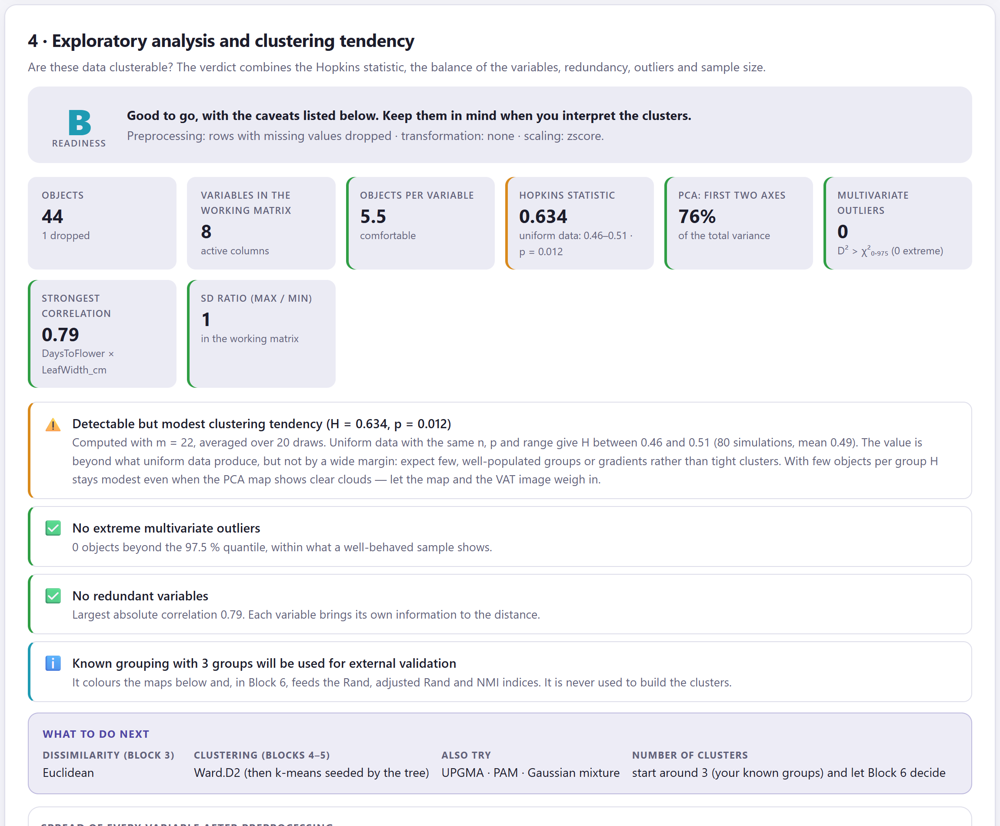
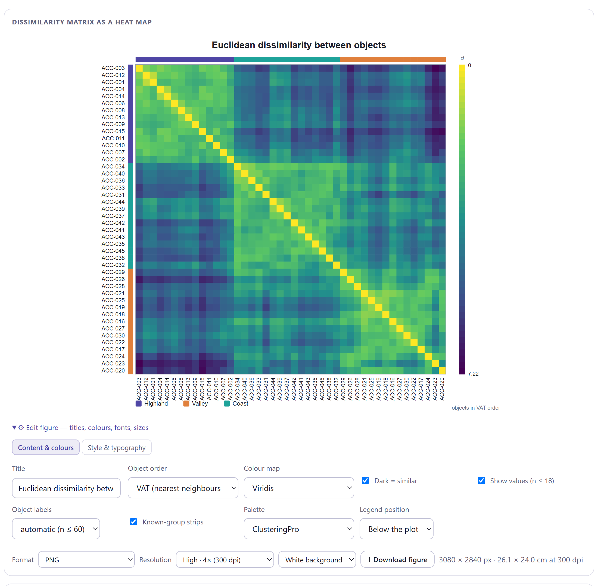
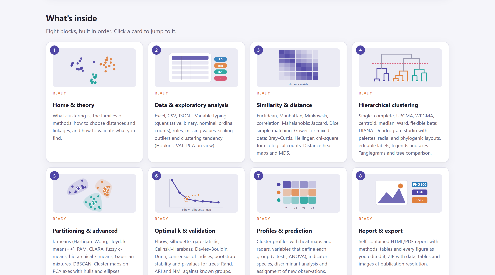

The digital object identifier (DOI) 10.5281/zenodo.22682795 always resolves to the most recent version of the software; each version also has its own DOI in the archive record (version 1.0.1, for instance, is 10.5281/zenodo.22682889). Source code: https://github.com/luisangelbg/ClusteringPro · online version: https://luisangelbg.github.io/ClusteringPro/
ClusteringPro runs entirely inside your web browser. The files you open are read on your own computer and are never sent to any server, not even when you use the online version. You can analyse unpublished data, or data covered by confidentiality agreements, with no risk of it leaving your machine.
The illustrations, diagrams and screenshots in this manual are original; they were produced with the software itself or with code written for the manual. The example datasets are described in section 1.7: they are realistic simulations created for teaching, with invented names of accessions, sites and taxa.
The manual follows the same order as the app: eight numbered blocks that you work through from left to right along the top bar. Each chapter explains one block. It opens with a little easy-to-digest theory, describes what the block computes and how to read it, and closes with a step-by-step example that uses the datasets already built into the software.
The colour of a block appears on the opening page of its chapter, in the section numbers, in the theory boxes, on the tab at the edge of the page and in the table of contents. That way you can tell at a glance which part of the app you are in.
| Block | Name in the app | What it does |
|---|---|---|
| 1 | Home | Home page, live demo, thirteen theory lessons and how to cite |
| 2 | Data & EDA | File loading, variable types and roles, preprocessing and clustering tendency |
| 3 | Distances | Similarity and distance coefficients, diagnosis of the matrix and comparison of coefficients |
| 4 | Hierarchical | Ten linkage rules, tree cut, dendrogram studio, heat maps and tanglegrams |
| 5 | Partitioning | k-means, PAM, CLARA, fuzzy c-means, Gaussian mixtures, DBSCAN and spectral clustering |
| 6 | Optimal k & validation | Number of clusters, stability, node support, external validation and comparison of algorithms |
| 7 | Profiles | What characterises each cluster, indicator species, discriminant analysis and assignment of new objects |
| 8 | Report | Publication-ready figures, automatic report, methods paragraph and ZIP package |
Clarifications and practical tips that save time.
Things that can change your conclusions if overlooked.
The idea behind an analysis, without unnecessary formulas.
A worked case using the datasets included with the software.
| If the value falls in this range… | then this is the recommended reading. |
These are guides to interpretation, not laws: your knowledge of the objects always has the final say.
| Written like this | Means |
|---|---|
| Build the tree → | A button, checkbox or menu of the app, with its text exactly as it appears on screen. |
| Edit figure›Style & typography | A path: open the first item and then the second. |
maize_landraces_morphology.csv | A file name, column name or value, to be typed exactly as shown. |
| k, s(i), H, ARI | Parameters and indices; their meaning is explained the first time they appear. |
| ● ◐ — | Available · partly available or available with conditions · not applicable. |
What the software is, which questions it answers, what data it accepts and how to work through it from start to finish. This chapter also covers the basic ideas of cluster analysis that you need to get the most out of the rest of the manual.
ClusteringPro is a platform for finding, validating and interpreting the natural groups hidden in a data table. It takes the table just as it comes from the field, the laboratory or the spreadsheet, checks whether it is worth clustering, computes the dissimilarity appropriate to each type of variable, builds trees and partitions, decides how many clusters to keep, validates them, describes what sets each one apart and delivers publication-ready figures and reports.
Everything happens inside your web browser. There is nothing to install, no programming is required and the data never leave your computer. The same steps work for morphological characters of accessions, presence or abundance tables of species by site, soil profiles with mixed variables, binary markers or a distance matrix computed elsewhere, so you can use a single workflow for all the data in a study.
index.html or from its web address. It needs neither administrator rights nor an internet connection.| Stage | What you get | Block |
|---|---|---|
| Data input | Reading of spreadsheets (.xlsx, .xlsm, .ods), delimited text (.csv, .tsv, .txt), JSON, text pasted from the clipboard and precomputed distance matrices; automatic detection of each variable’s type. | 2 |
| Exploration | Missing values, transformation and scaling; Hopkins statistic with its P value, VAT image, principal component map, multivariate outliers, correlations and a grade from A to D with recommendations. | 2 |
| Dissimilarity | 39 coefficients in six families; metric and Euclidean diagnosis of the matrix; heat map, PCoA, Shepard diagram, nearest-neighbour network and comparison of coefficients. | 3 |
| Trees | Ten linkage rules, cophenetic correlation, cut by number of clusters or by height, dendrogram studio (rectangular, triangular, horizontal, radial), heat map with trees, tanglegrams. | 4 |
| Partitions | k-means (three algorithms), hierarchical k-means, PAM, CLARA, fuzzy c-means, Gaussian mixtures with BIC, DBSCAN and spectral clustering; cluster map with ellipses, silhouette plot, memberships. | 5 |
| Number of clusters | Thirteen criteria that vote for a k (elbow, silhouette, gap, Calinski–Harabasz, Davies–Bouldin, Dunn and more), bootstrap stability, AU/BP support of the nodes, adjusted Rand index, NMI and comparison of algorithms. | 6 |
| Interpretation | Test values by variable, ANOVA and Kruskal–Wallis, over-represented categories, indicator species, discriminant analysis with cross-validation, classification tree rules and assignment of new objects. | 7 |
| Publication | Editable figures up to 900 dpi (PNG, TIFF, SVG, JPG, WEBP), complete HTML report with executive summary and methods paragraph, printing to PDF and a ZIP package with data, tables and figures. | 8 |
For anyone who needs to classify objects on the basis of many variables and wants defensible results without wrestling with packages or command lines: undergraduate and graduate students starting out in multivariate analysis; researchers in plant genetic resources, community ecology, soil science and agronomy; breeders characterising germplasm; and teachers who need to show in class why two linkage rules give different trees or how k-means makes its decisions. Every result comes with a paragraph that interprets it in plain language, which also makes the app a teaching tool.
A good analysis starts with a question. The following table maps the most common questions in a clustering study to the analysis that answers them and the block where it is found.
| Question | Analysis that answers it | Block |
|---|---|---|
| Is my table well formed and are my variables correctly typed? | Sheet check, automatic typing with manual correction and column roles | 2 |
| Does it make sense to look for clusters in these data? | Hopkins statistic with P value, VAT image and principal component map | 2 |
| Which distance coefficient should I use with my variables? | Recommendation by data type and comparison of candidate coefficients | 2 3 |
| Can I use Ward or k-means with this distance? | Diagnosis of the matrix: triangle inequality and Euclidean embeddability | 3 |
| Which objects are most alike? | Ordered heat map, nearest-neighbour network and hierarchical tree | 3 4 |
| Does the dendrogram represent the distances well? | Cophenetic correlation and agglomerative coefficient | 4 |
| Does the tree change if I change the linkage rule? | Table of linkage rules, Baker’s gamma and tanglegrams | 4 |
| Which partitioning method suits my data? | Recommendation by data type and comparison of methods at the same k | 5 |
| Are there irregularly shaped clusters or outliers that do not fit? | DBSCAN (with noise), spectral clustering and PAM | 5 |
| How many clusters are there? | Thirteen criteria with a consensus vote, gap statistic and BIC of the mixtures | 6 5 |
| Are the clusters real or an accident of the sample? | Bootstrap stability and AU/BP support of the tree nodes | 6 |
| Do the clusters match a prior classification? | Adjusted Rand index, NMI, purity and χ² test | 6 |
| Which variables distinguish each cluster? | Test values, ANOVA and Kruskal–Wallis by variable, heat map of means | 7 |
| Which species indicate each group of sites? | Indicator value (IndVal) with a permutation test | 7 |
| Which cluster does a new object belong to? | Discriminant analysis, nearest centroid and classification tree rules | 7 |
| How do I report all this in a paper? | Report with executive summary, methods paragraph, vector figures and ZIP package | 8 |
You do not need a prior course to use the app, but these five ideas come up in every chapter. Read them once and come back to them whenever you need to.
Clustering means looking for sets of objects that are more alike to each other than to the rest. Nobody tells the algorithm which clusters exist or how many there are; that is why it is called unsupervised learning, as opposed to classification, where the groups are known in advance and what is learnt is how to predict them. Almost everything ClusteringPro computes measures one of two things: the compactness of the clusters or the separation between them.
Algorithms never see your variables: they see a dissimilarity matrix between pairs of objects. Changing the coefficient changes the clusters, so this choice matters more than the choice of algorithm. For quantitative variables the Euclidean distance is the starting point; for presence/absence data, Jaccard or Dice, which do not count shared absences; for abundances, Bray–Curtis or Hellinger; for tables with variables of several types, Gower. And when the units differ you must standardise first, or the variable with the largest numbers will decide the clusters on its own.
Two maize accessions measured for plant height and days to flowering: A = (210 cm, 82 days) and B = (190 cm, 95 days). The Euclidean distance in the original units is
√[(210 − 190)² + (82 − 95)²] = √(400 + 169) = 23.9
If height were measured in millimetres, the first term would be 40,000 and the days would count for almost nothing. After standardising each variable (mean 0, standard deviation 1), the two differences weigh what they are worth on their own scale, and the distance becomes a unitless number that can be compared across pairs.
Hierarchical methods build a tree of merges (or splits) and do not require you to choose the number of clusters in advance: you cut the dendrogram at whatever height suits you. Partitioning methods, such as k-means or PAM, divide the objects into a number k of clusters set by the user and refine them until nothing changes. To these are added density-based methods (DBSCAN), which find clusters of any shape and flag noise, and model-based methods (Gaussian mixtures), which give each object a probability of membership. ClusteringPro offers all four families and the tools to compare them.
Any algorithm returns clusters, even when there are none: k-means will split a single cloud into three if you ask it to. That is why Block 2 first asks whether the data have any structure (Hopkins statistic) and Block 6 evaluates each number of clusters with thirteen different criteria and counts their votes. The silhouette, the gap statistic and bootstrap stability carry the most weight, but interpretation has the last word: a cluster that cannot be described in terms of the variables is of little use.
A clustering result is defended with three pieces of evidence: a measure of internal quality (the average silhouette width and, for trees, the cophenetic correlation), a measure of stability (how often each cluster reappears when the objects are resampled) and, if a prior classification exists, a measure of external agreement (the adjusted Rand index). Block 7 completes the work by describing which variables, categories or species characterise each cluster, and Block 8 brings everything together in a report.
The first decision in any clustering is to establish what kind of variables you have, because that determines the dissimilarity coefficient and, with it, the methods that make sense. ClusteringPro recognises five variable types, accepts tables that mix them and also accepts a precomputed distance matrix.
| Type | Examples | Coefficients proposed by the app | Watch out for… |
|---|---|---|---|
| Quantitative | Height, yield, pH, gene expression, morphometric measurements | Euclidean, Manhattan, Minkowski, Canberra, Mahalanobis, correlation distances, Euclidean on principal components | Different units without standardisation; outliers that drag the centroids. |
| Binary (0/1) | Presence of species, alleles, traits, symptoms | Jaccard, Dice–Sørensen, Ochiai, Kulczynski (asymmetric); simple matching, Rogers–Tanimoto (symmetric); Hamming, Yule | Using a symmetric coefficient when 0 means “not there”: shared absences inflate the similarity. |
| Nominal | Cultivar, soil type, colour, region | Simple matching of categories, Gower | Numeric category codes treated as quantities. |
| Ordinal | Damage scales, scores, size classes | Manhattan on normalised ranks, Gower | The order of the levels: check it in Block 2 (the app proposes one and you can correct it). |
| Counts and abundances | Species × site tables, OTUs, catches | Bray–Curtis, Ružička, Kulczynski, Morisita–Horn, Hellinger, chord, chi-square, Canberra, Jaccard on presence | The raw Euclidean distance: it is dominated by abundant species and double zeros. |
| Mixed | Any combination of the above in one table | Gower with weights; Euclidean on the matrix with indicator variables | Assuming that a single kind of coefficient will do for the whole table. |
| Distance matrix | Genetic, geographic or expert distances computed elsewhere | Used as is, as its square root or as its square | A non-Euclidean matrix with Ward or k-means: the app detects this and suggests √d. |
Declaring the wrong type for a variable changes the results. A column of region codes (1, 2, 3) read as quantitative would place region 3 “further” from region 1 than from region 2 for no reason at all. Block 2 detects the type automatically, but it always shows you what it assumed and lets you correct it before anything is computed.
index.html | The app. Open it with a double click. |
Open ClusteringPro.bat | Optional launcher with a local server. |
js/, css/ | The program code. |
data/ | The example files. |
manual/ | This manual. |
ClusteringPro folder to your computer, for example to Documents. Do not separate index.html from the other folders.index.html. It opens in your default browser on the Block 1 home page.The same app is published at https://luisangelbg.github.io/ClusteringPro/. Use it to work from any computer without copying anything; it always corresponds to the latest version. There too, all computation takes place in your browser: the page is static and your files are never uploaded anywhere.
Everything works with a double click, including the seven examples: they are embedded in the app and do not need to be read from the data/ folder, which keeps them as CSV files so that you can see how they are laid out. Open ClusteringPro.bat is an alternative: it starts a small server on your own computer (address http://localhost:8900) and opens the app from there. Use it if your browser restricts pages opened as local files, or to open the app from a tablet on the same network. Nothing is sent to the internet in this case either.
The app stores your figure style preferences in your browser. If you switch browsers or clear your browsing data, those preferences are lost, but your original files are never modified. The results of an analysis are not saved automatically: download them from Block 8 before closing the tab.
All analysis blocks share the same layout, so you only need to learn it once. From top to bottom, each block has four parts:
| Part | What it contains | How it appears on screen |
|---|---|---|
| Theory | A collapsible box with the part of the theory that matters at that step, with figures. | A card with numbered accordions at the top of the block |
| 1 · Settings | A recommendation computed from your data, the analysis options with sensible defaults and a button to run the computation. | Recommendation · Compute …, Build …, Run → |
| 2 · Results and diagnostics | Boxes with the main values, a traffic-light list of checks (green, amber, red) that interprets the results in plain language, and downloadable tables. | Value boxes · checks marked ✅ ⚠️ ⛔ ℹ️ |
| 3 · Figures and comparisons | Editable figures with style and export controls; in most blocks, a final card that compares alternatives (coefficients, linkage rules, methods). | Edit figure · Download figure · Compare |
Interface terms. The app is in English, the language of scientific journals. Table 1.3 lists the terms you will meet in every block.
| In the app | Meaning | In the app | Meaning |
|---|---|---|---|
| Object · Variable | Object (row) · variable (column) | Edit figure | Opens the figure editor |
| Dissimilarity · Distance | Dissimilarity · distance between objects | Content & colours | What is drawn and in which colours |
| Linkage | Linkage rule of the tree | Style & typography | Theme, fonts and sizes |
| Cut · Cluster | Tree cut · cluster | Palette | Colour palette |
| Known grouping | Known grouping (for validation, never for clustering) | Legend position | Position of the legend |
| Silhouette | Silhouette (quality of the partition) | Resolution | Export resolution |
| Random seed | Seed of the random number generator | Download | Save to your computer |
| Continue to … | Go on to the next block | How to cite | Reference, DOI and BibTeX entry |


1 2 3 4 5 6Several analyses depend on chance: the k-means starts, the CLARA samples, the reference sets of the gap statistic, the stability resamples and the indicator species permutations. The Random seed fixes that randomness: with the same seed and the same data you will obtain exactly the same results. Record the seed in the methods section of your paper so that others can reproduce them; the Block 8 report includes it for you.
The software includes seven ready-to-use datasets, one for each kind of table it accepts. Five come as files in the data/ folder and two are generated on the fly inside the app. The chapter for each block uses them in its step-by-step examples.
| Button in the app | Type | Contents | Ideal for practising |
|---|---|---|---|
| Quantitative · maize landraces | Quantitative | 45 maize accessions × 8 morphological characters (plant and ear height, days to flowering, ear length, kernel rows, grain weight, yield, leaf width), with region of origin as the known grouping and one planted missing value. | The whole workflow: Euclidean, Ward, k-means, optimal k, profiles, discriminant analysis |
| Binary · plant species presence | Binary | 30 sites × 22 species as presence/absence, with the habitat of each site. | Jaccard versus simple matching, UPGMA, PAM |
| Counts · insect abundance | Counts | 24 sites × 14 captured insect taxa, with the landscape type. | Bray–Curtis and Hellinger, PAM, indicator species |
| Mixed · soil profiles | Mixed | 36 soil profiles with quantitative variables (pH, organic matter, clay, sand, CEC, slope), one nominal (texture), one ordinal (drainage) and one binary (calcareous). | Gower, PAM, profiles with categorical variables |
| Distance matrix · 12 cultivars | Matrix | A precomputed matrix of genetic distances between 12 cultivars, like the one produced by a marker analysis program. | Direct input of a matrix, √d, trees and PAM |
| Simulated · four clear clusters | Quantitative | 80 objects × 5 variables generated on the fly with four well-separated clusters. | Seeing how the criteria for k behave when the answer is obvious |
| Simulated · uniform noise | Quantitative | 60 objects with no structure at all, generated on the fly. | Seeing what a Hopkins value of 0.5 looks like and why you should not cluster just anything |

The seven datasets were created for teaching: they are realistic simulations with invented names of accessions, sites and taxa, designed so that each kind of table shows what the app can do with it. They do not describe real materials and must not be cited as experimental data.
The blocks are ordered the way an analysis is carried out: first you check whether clustering is worthwhile, then you choose how to measure resemblance, then you cluster in two different ways, decide how many clusters to keep and validate them, and finally you interpret and publish them. Each data type follows that route with small differences, like metro lines that stop at almost every station.
| Type | 3 | 4 | 5 | 6 | 7 | Conditions |
|---|---|---|---|---|---|---|
| Quantitative | ● | ● | ● | ● | ● | Everything available. Ward and k-means are the natural route if the distance is Euclidean. |
| Binary | ● | ● | ◐ | ● | ◐ | k-means, fuzzy c-means and mixtures work on the PCoA axes of the dissimilarity (the app proposes this itself); PAM uses the matrix directly. Profiles treat each 0/1 column as a variable; with species, the indicator value is a better choice. |
| Categorical | ● | ● | ◐ | ◐ | ◐ | As for binary data in Block 5. Without quantitative variables there is no AU/BP node support and no discriminant analysis; test values for categories and tree rules are available. |
| Abundances | ● | ● | ◐ | ● | ● | Bray–Curtis is not Euclidean: Ward and k-means only on PCoA axes or after the Hellinger transformation; PAM without restrictions. Indicator species available. |
| Mixed | ● | ● | ◐ | ◐ | ● | Gower with PAM is the natural route; coordinate-based methods use the PCoA axes. AU/BP support resamples only the numeric variables. |
| Distance matrix | ● | ● | ◐ | ◐ | — | Variable-based exploration is skipped. Without variables there are no profiles and no AU/BP support; k-means works on the coordinates of the matrix. Everything else is available. |
| Situation | Reading | What to do |
|---|---|---|
| At least 5 to 10 objects per expected cluster | Adequate | The criteria for k, the silhouette and resampling are informative. With 30 objects and 3 expected clusters you can already work well. |
| Fewer than 5 objects per cluster | Limited | Small clusters dissolve under resampling and any outlier forms its own cluster. Interpret the tree, not the partition. |
| More variables than objects | Caution | All the distances become similar to one another. Remove redundant variables or cluster on the first principal components (Block 3). |
| Variables irrelevant to the question | Risk | Every “noise” variable dilutes the structure carried by the useful ones. Keep them as supplementary: they are not used for clustering, but they are used to describe the clusters. |
The app flags the object-to-variable ratio in Block 2 and clusters with fewer than three objects in Block 5.
Although you can jump between blocks, there are two stops you should not skip. The first is the Block 2 verdict: if the Hopkins statistic says the data are uniform, everything that follows will describe clusters that do not exist. The second is Block 6: the tree in Block 4 and the partition in Block 5 are cut with a provisional number of clusters, and Block 6 is where that number is put to the thirteen criteria and to the stability test. The Adopt k button sends the chosen number back to Blocks 4 and 5 to redo the cut.
Three kinds of number appear again and again in the app: quality indices bounded between −1 and 1 or between 0 and 1 (the silhouette, the cophenetic correlation, the adjusted Rand index), P values from permutation or Monte Carlo tests (Hopkins, indicator species, χ²) and coefficients of explained variation. Understanding them prevents the two most common mistakes: taking a moderate index for a good result, and believing that a significant P value guarantees that the clusters are useful.
For each object, s(i) compares its mean distance to the other members of its cluster (a) with its mean distance to the nearest neighbouring cluster (b): s = (b − a) / max(a, b). It is close to 1 when the object is well placed, close to 0 when it lies between two clusters, and negative when it probably belongs to another one. The average silhouette width of the partition sums everything up in a single number.
A dendrogram summarises the distance matrix: the height at which two objects are first joined is their cophenetic distance. The correlation between those heights and the original distances measures how faithful the tree is. Above 0.75 the dendrogram can be read with confidence; below 0.6 it is advisable to change the linkage rule or the coefficient.
| Average silhouette | Structure | How to word it |
|---|---|---|
| 0.71 to 1.00 | Strong | “A strong, well-separated cluster structure was found.” |
| 0.51 to 0.70 | Reasonable | “The partition is clear, with some objects close to the boundaries.” |
| 0.26 to 0.50 | Weak | “The clusters overlap; the partition is exploratory.” Check it against the stability results in Block 6. |
| ≤ 0.25 | No substantial structure | Do not claim that there are clusters. Try another coefficient, another method or another number of clusters, or accept that the data form a gradient. |
The thresholds are those of Kaufman and Rousseeuw (1990). In real biological data with many variables, a silhouette of 0.4 often already goes with interpretable clusters.
It is the probability of observing a result as extreme as yours if there were in fact no effect. A P = 0.012 for the Hopkins statistic says that, if the data were uniform, a value of H this high would occur by chance 12 times in 1,000. In the app, almost all P values come from permutations or simulations, so they depend on the seed and on the number of replicates.
It compares two ways of clustering the same objects, for example your clusters and a prior classification. It equals 1 when they match exactly and 0 when they agree only as much as two random labellings would; it can be negative. Above 0.7 the two partitions tell the same story; between 0.4 and 0.7 they share a common core; below that, they have little in common.
The variables used to build the clusters always differ “significantly” between them: that is precisely what the clusters were built to do. This is why the P values in Block 7 are descriptive when they refer to the active variables, and only carry the weight of a test for supplementary variables, which played no part in the clustering. Always report the effect size (the silhouette, the difference between means, the indicator value) alongside the P value.